あと1日で終了！説明会参加でもれなく1,500円プレゼントキャンペーン中
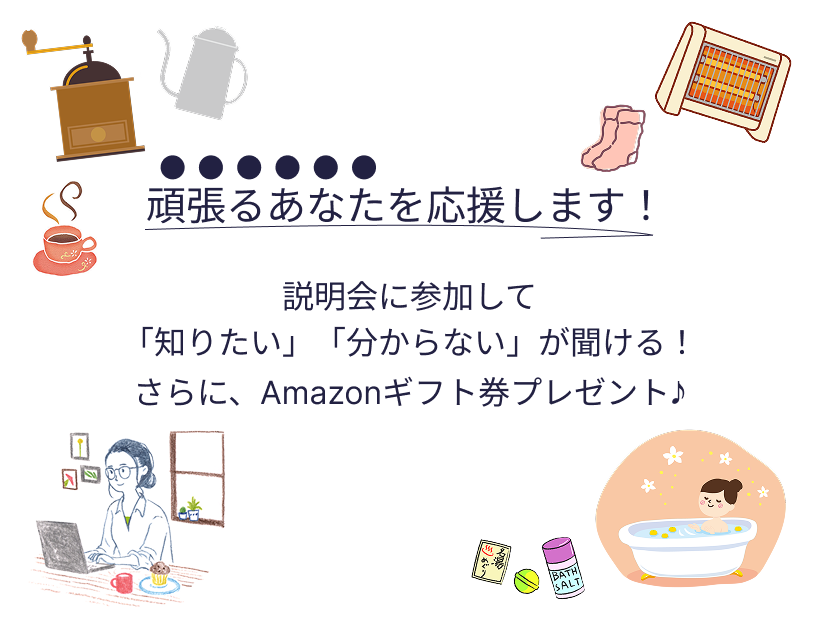
※説明会ご参加者限定となります
※本キャンペーンは2023年8月1日～2023年8月3日の間に説明会をご予約された方限定のキャンペーンとなります
(予告なく早期終了する場合がございます)
受講料無料キャンペーン開催中！
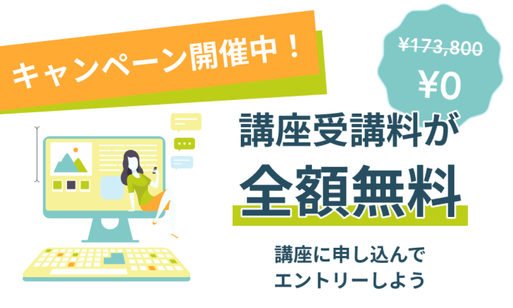
TVCM放映
女性向けWebデザインスクール調査で1位を獲得
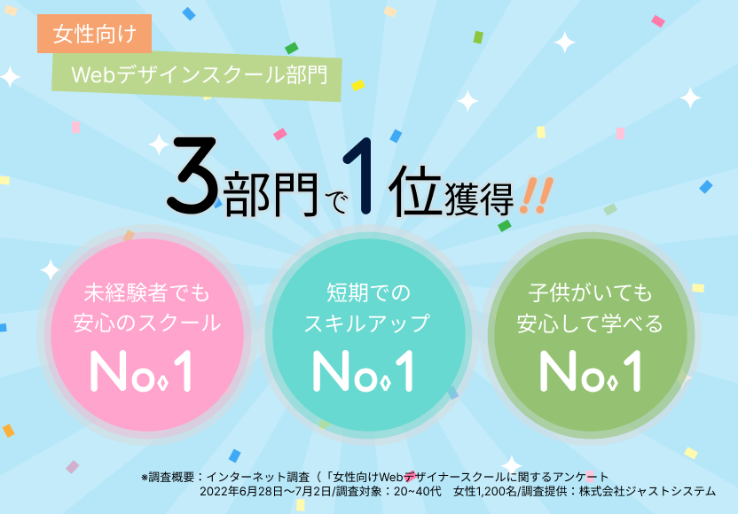
スクールの主なメディア実績・リリース情報
-
2022.07.25
プレスリリース
経済産業省と独立行政法人情報処理推進機構（IPA）が運営するポータルサイト「マナビDX」に提供講座が掲載開始
-
2022.05.10
プレスリリース
ブランド初となるオフライン参加型イベント「Fammスクール オープンキャンパス」を二子玉川ライズで開催
-
2021.12.17
小学館ぎゅってweb様掲載
「育休中にスキルを身につけたい！Webデザイナースクールに通うママのタイムスケジュール」
メディア実績・リリース情報をもっと見る
-
2022.07.25 プレスリリース
Fammママ専用スクール、経済産業省と独立行政法人情報処理推進機構（IPA）が運営するポータルサイト「マナビDX」に提供講座が掲載開始
-
2022.05.10
プレスリリース
Fammママ専用スクールのブランドキャンペーン「そのこだわりが、しごとになる。」の第二弾として、ブランド初となるオフライン参加型イベント「Fammスクール オープンキャンパス」を二子玉川ライズで開催
-
2022.03.17
プレスリリース
「Fammママ専用スクール」とクリエイター向けポートフォリオ作成サービス「foriio」が提携し、子供がいる女性がより活躍できる環境づくりをサポート
-
2021.12.21
経済界web様掲載
「育休ママを支援する男性経営者が自ら育休取得して分かったこと」
-
2021.12.17
小学館ぎゅってweb様掲載
「育休中にスキルを身につけたい！Webデザイナースクールに通うママのタイムスケジュール」
-
2021.11.22
日経ビジネス電子版様掲載
「消えた復職の夢、ITスキルで身を立てる」
-
2021.7.19
プレスリリース
Fammを運営する株式会社Timersが戦略的パートナーシップ構築を目的にNTTグループ、マイナビ、朝日新聞グループ、名古屋テレビグループ各社から資金調達を実施
-
2021.6.21
産経新聞様掲載
「女性不況 高まる学び直し 危機備え 技術と収入源複線化
-
2021.4.9
SankeiBiz様掲載
「育休中も充実へ！ 自宅でスキルアップできるサービスが大人気」
-
2021.2.16
女子SPA!様掲載
「コロナで育休後に復帰できず...失業したママが、手に職をつけた方法」
-
2020.12.3
日本経済新聞様掲載
「ママ、育休中も学べるか シッター付き講座も登場」
子育てママの仕事の悩み
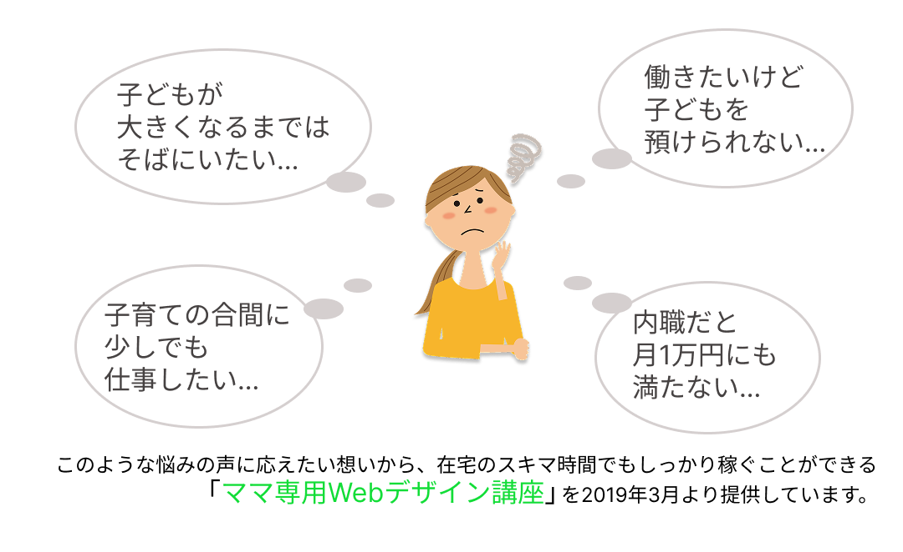
在宅ワークなのに高単価！ママに人気のWebデザイナー
Webデザインのスキルを身に付けると高単価の在宅ワークに挑戦できます。
子供との時間を増やしたい
産休後のキャリアアップ
IT知識やスキルを身に付けたいママ
におすすめです。
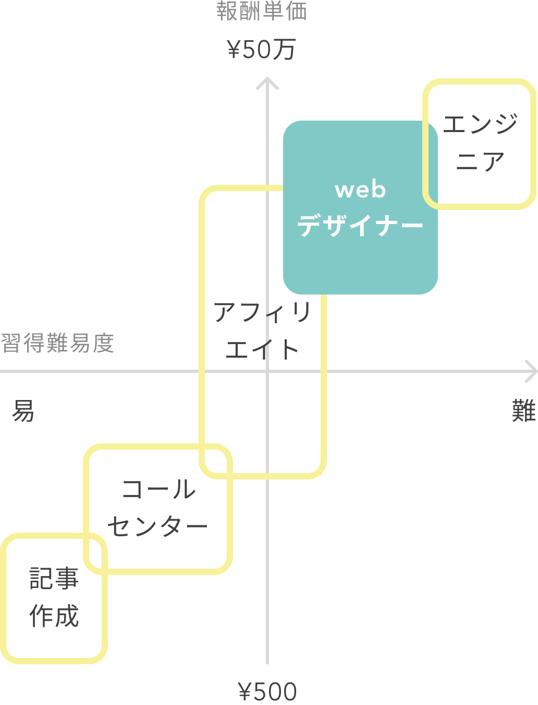
育児と仕事を両立しやすい在宅ワーク
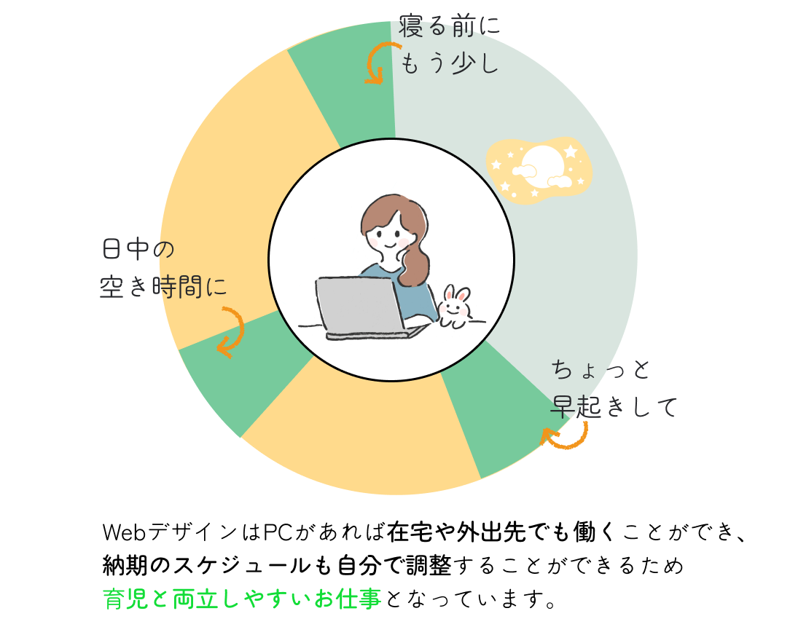
LIVE配信+無料のシッターサービスはFammスクールだけ
多くのWebデザイナースクールでは、
- 子供が預けられなかったり
- 開催時間が夜や休日中心だったり
- 参加者がママ以外の人であったり
というケースがほとんど。
ママが安心して教育を受けられる機会が極端に少ないのが現状です。
Fammは、
- LIVE配信
- 無料シッターサービス
を備えた唯一のママ専用Webデザインスクールとして、
在宅ワークで月10万円以上の収入をめざし、未経験からでも挫折せずにスキルを身に付けられる環境があります。
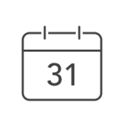
1ヶ月短期集中カリキュラム
自宅で空き時間に未経験から実務レベルへ
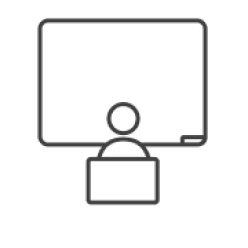
専任講師と少人数制クラス
対面授業と同等以上の学びやすさ
ご自宅でお子様とご一緒に
無料でシッターがお預かりします
卒業後も何度でも質問できる
受講期間だけでなく卒業後半年間も質問し放題
卒業後も応用講座で学び放題
デザイン、動画、マーケなど60スキル以上が無料
卒業後のお仕事発注保障
卒業後のお仕事を5件まで保証
毎月即満席の人気講座！卒業生は3,000人を突破
新型コロナウイルスによる影響で外出が難しい方、遠方にお住まいの方にも受講いただきたく、無料シッター付きのLIVE配信講座を立ち上げてから毎月即満席となっています。
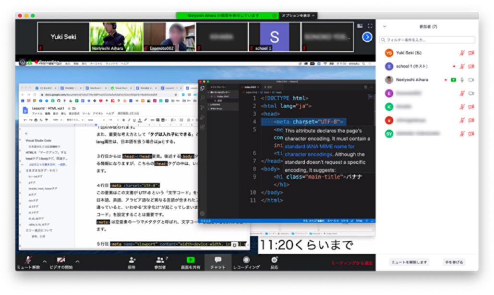
1ヶ月でWebデザインスキルを身に付けられる
Webデザインのお仕事をするために必要なバナー制作・ページ制作ができるようになります。
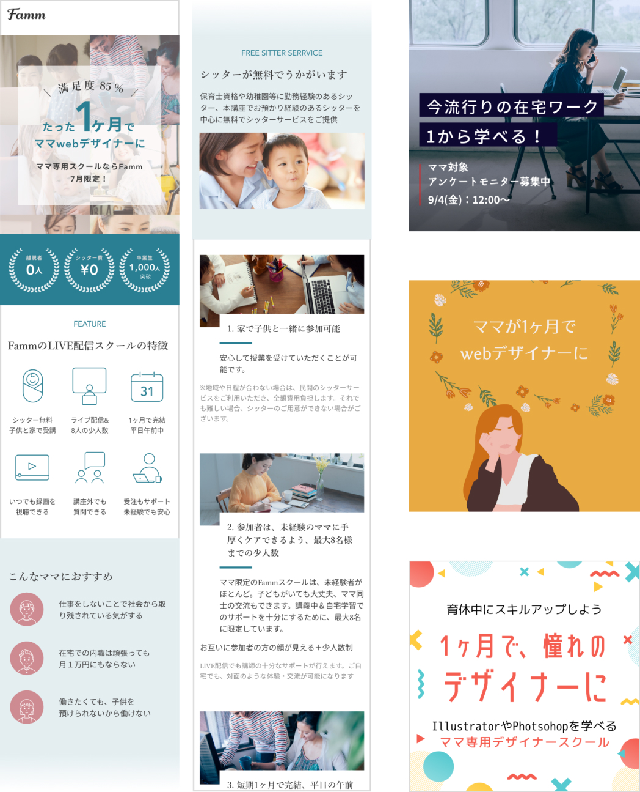
シッターがお子様をお預かりしますので、在宅で対面と同等の授業を安心して受けられます
FammのLIVE配信講座は「ママ専用ならでは」「Fammならでは」の以下の特徴を持っています。
1.家で子供と一緒に参加可能
保育士資格や幼稚園や保育園での勤務経験のあるシッターを中心にシッターサービスを無料で提供させていただきます。
2.未経験のママに手厚くケアできるよう、最大8名様までの少人数制
講義中や自宅学習でのサポートを十分にご提供するために、あえて最大8名までの少人数制クラスにしています。
参加者のママはほぼ全員が未経験者ですので、ご安心ください。
3.短期1ヶ月で完結、平日の午前中に実施
忙しいママ向けだからこそ、1ヶ月の短期で身につくカリキュラム。ママにとって最も参加しやすい平日の午前中に開講します。おうちでの受講なので、移動の心配もありません。
4.出られない日があっても安心、講義の内容を繰り返し視聴することができます
LIVE配信による講義の様子を、毎回録画もいたしますので、いつでも見返すことができます。少人数制だからこその、講義前後での講師によるサポートも可能です。
5.卒業後の受注実績作りまでサポート
講座の卒業後、Fammから実際の案件発注を5件まで保証しています。
継続的に仕事を得るために必要な「実績作り」を実現できます。
Fammスクールの過去の卒業生の中で、この発注をきっかけにして次の仕事につなげている方が多数いらっしゃいます。
（IT系への就職が決まった方も！）

6.卒業後も安心、100スキル以上の応用講座で学び放題
Webデザインに加え、Webマーケティング、動画など、100スキル以上の応用講座を全て無料で提供しています。
また、卒業後も引き続き6ヶ月間は講師への質問回数に制限はありません。
日々の学習でつまずいた時はもちろん、実際にお仕事を進めてる中での相談・添削も可能です。
応用講座で学べるスキル
Webデザインスキル
- デザインの基礎
- figma講座
- XD入門講座
- Canva講座
- ワイヤーフレーム制作
- UI/UX講座
グラフィックデザインスキル
- ロゴ・名刺制作
- 企画書制作
- チラシの制作
- Adobe Photoshop演習
- Adobe Illustrator演習
- オリジナル年賀状制作
Webマーケティングスキル
- Google Analytics
- Webマーケティング基礎
- Facebook広告運用
- コンテンツマーケティング
動画編集スキル
- 撮影・編集の基礎
- 動画編集演習
- After Effects初級
- After Effects中級
Webサイト設計
- Webの仕組み
- JavaScriptについて
- HTML/CSSの基本
- responsive対応
- CSSを学ぶ
- SEO対策
在宅ワーク準備スキル
- お仕事の受注方法
- 営業資料作成講座
- セルフプロデュース
- SNS運用講座
- プロジェクトマネジメント
- Instagramを使った営業方法
写真撮影スキル
- SNS用写真撮影講座
ビジネスPCスキル
- ビジネスPCスキル初級
- ビジネスPCスキル中級
マインドセットスキル
- ロジカルシンキング
- 時間の使い方
ライティングスキル
- Webライター
- コピーライティング
CMS運用スキル
- WordPress初級講座
- WordPress中級講座
- Movable Type初級講座
- Movable Type中級講座
その他スキル
- インサイドセールス
- 広報・PR講座
- プログラミング➀
- プログラミング➁
現職や復職に向けてWebデザインの学習をしたい方にもおススメ
現職や復職に向けて育休中に学習をして、「より仕事で活躍したい」「お仕事の領域を拡げたい」という方にも、1ヶ月の短期で学べるのでおススメです。
人生を変えたママがたくさん！
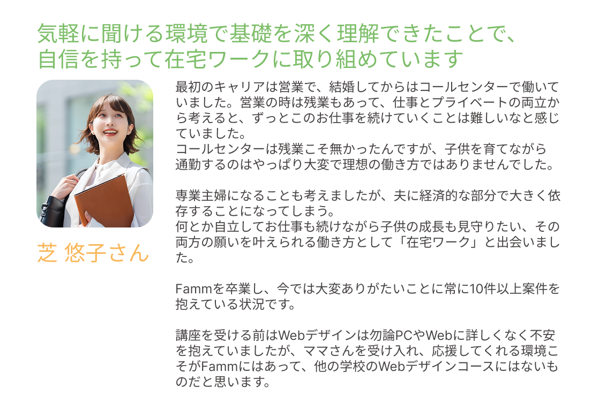
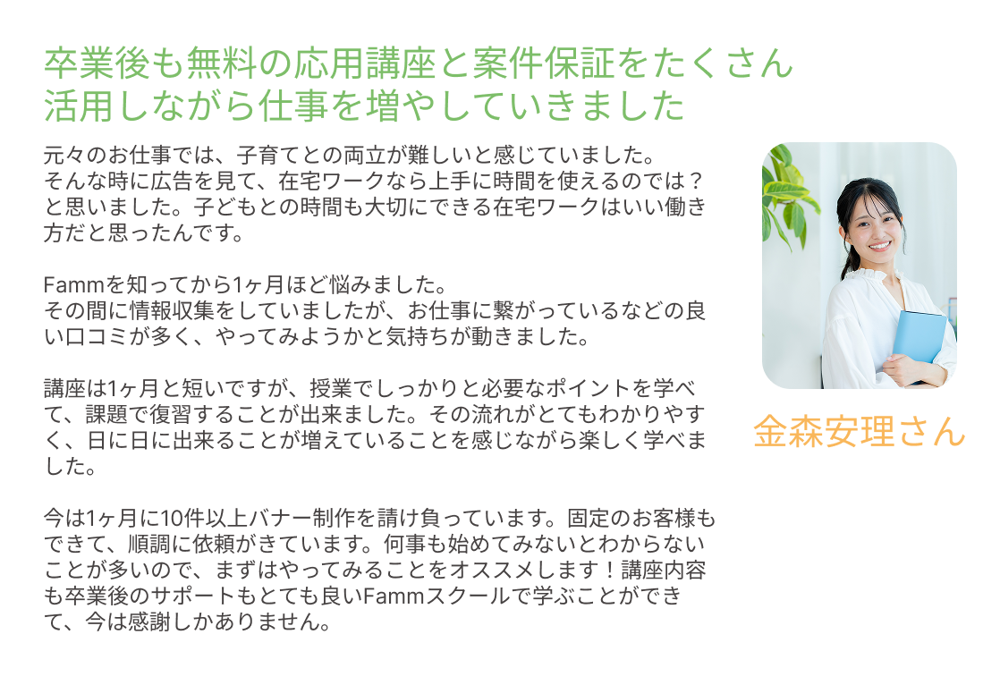
講座で学べる内容
時間は全て10時～13時、1回3時間の講義で無理なく学べます。講義外でも、いつでも何度でも質問できます。
第1回：Adobe Photoshopでグラフィックを学ぶ
第2回：Webサイトの仕組み、HTMLを学ぶ➀
第3回：HTMLを学ぶ➁、CSSを学ぶ➀
第4回：CSSを学ぶ➁+卒業演習発表
第5回：CSSを学ぶ➂、FTP・CGIを学ぶ
※やむを得ぬ事情により、講義日程や内容が一部変更となる可能性がございます。あらかじめご承知ください
※講義ではデザインの作り方・考え方・実際の仕事で気をつけるべきポイントなどもご紹介します
※授業を一緒に受けるママ8名と講師が参加するオンライングループ内で、講義以外でも宿題・課題の提出や講師からのフィードバック反映などを踏まえ、1ヶ月で45時間-60時間の学びを集中的に行っていただきます
講義後のアンケートに、95.4%の受講生が「満足」と答えてくださいました
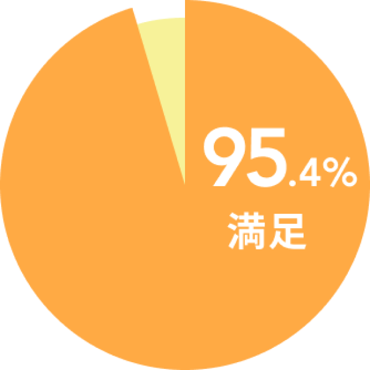
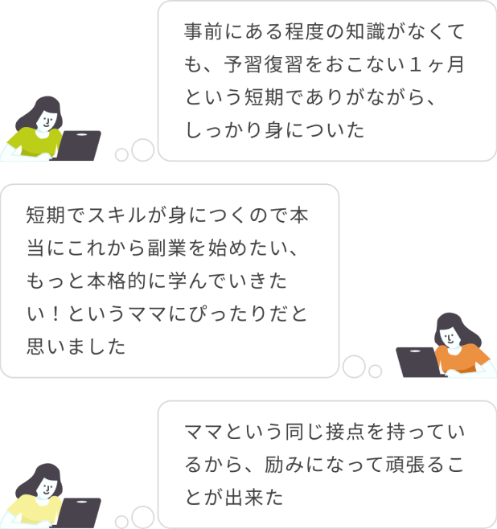
※アンケート回答数：(2021年4月～7月に実施した過去スクール参加者へのアンケート調査より、N=303)
しっかりしたサポートで、お客様の満足度と成長に向き合います
満足度を講義毎にチェックしてサポート
講義の度に満足度調査を実施。各コースの担当者が満足度や習熟度の状況をみながら、短期集中コースをフルに活かしていただくためのアドバイス・サポートを行います。
質問やフィードバック依頼には原則1営業日で対応
短期のコースでは学習がストップしてしまうと習熟度に大きな影響を与えます。授業や日々の課題に関する質問には遅くとも1営業日後には回答。参加者の学びのスピードを止めない体制でサポートします。
卒業時には「NPS®アンケート」を実施
NPS®(ネットプロモータースコア)と呼ばれる先進的な顧客満足度の調査手法を取り入れ、シビアな視点で顧客体験のチェックを毎回行い、サービス品質の向上に努めています。
講座日程について
月毎に開催：全5回、週に約1講義のペースで開催
- 講座時間：10時～13時（※前後15分程度の余裕を見てください）
- 初回講座の約1週間前に自己紹介会を予定(30分程度)
→日程の詳細は説明会にてご案内（ご希望に添った日程をご案内いたします）
講師紹介
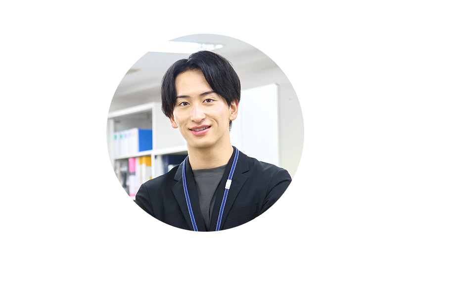
伊藤 学（いとう まなぶ）
得意分野・デザイン(Web/印刷)- プロデュース、ディレクション、プランナー
- カメラ撮影、動画撮影、HTML、CSS、Javascript、jQuery
- Dreamweaver、Photoshop、Illustrator、XD、Premiere 等
経歴
- 1999年 都内インターネット専門学校に在籍しつつ、WEBサイト制作ユニット「STUDIO Freesia」を結成。街のパソコン教室やWEB系派遣会社の登録者向け講師を担当。
- 2004年～2006年 WEB制作会社にて、ディレクション・設計などを担当。中小から大企業までのWEBサイト制作に携わるほか、WEB系専門誌の寄稿や企画を担当したり、Adobeオフィシャルトレーニングブック等を執筆。
- 2007年以降は再びフリーランスへ。WEBサイト企画・プロデュース・制作・運営をしつつ、デザイン専門学校、カルチャースクール、職業訓練校などのWEBデザイン講師を担当。
宮崎 祐樹（みやざき ゆうき）
得意分野・デザイン(Web)- Photoshop/Illustrator/Adobe XD
- HTML/CSS/Sass/Javascript/jQuery
- Wordpress/PHP
経歴
- 学生時代にフランスの大学に語学留学
- 帰国後、2008年より外資系企業でウェブデザイン、フロントエンド開発を担当
- 2017年よりフリーランスとして、ウェブデザイナー兼フロントエンジニアとして活動
- 数社を渡り歩き、大規模なウェブサイトの制作・開発に携わる
- 現場で実際に手を動かす傍ら、デザインやコーディングのアドバイザーも務める
かわた まい（かわた まい）
得意分野・デザイン(Web/UI/ライティング)- Photoshop・Illustrator・XD/HTML・CSS・jQuery・Wordpress
- ディレクション/取材・ライティング
経歴
- 大学卒業後、服飾雑貨メーカーにて企画/広報として、企画提案/プレスリリース制作/Web・Eサイト運営
- 2012年～2015年 企業インハウスWebデザイナー
- 2016年 産休・育児休業
- 2017年～ フリーランスとして活動中
川原 清隆（かわはら きよたか）
得意分野・デザイン(Web/印刷)- Illustrator/HTML/CSS/javascript/jquery/レスポンシブル/Wordpress/Premier
経歴
- 20代前半営業からパソコン教室の講師を経て25歳で起業。
- 30歳から育児を中心に据えフリーランスとして活動。
- 福岡の個人事業、小さな会社のホームページや各種デザインを中心に活動。
- 2018年11月よりストアカでWordPress中心のプライベートレッスンもはじめ、1年で150名以上にレッスン。
- 2019年3月から動画編集事業もはじめYoutubeでの動画編集に従事。
松尾 千鶴（まつお ちづる）
得意分野・デザイン(Web制作/サイト運用)- Photoshop・Illustrator/HTML・CSS・Javascript・jQuery
- 運用サポート・アクセス解析・SEOライティング・運用改善企画提案
経歴
- KURO Designを運営し、大阪市と堺市でWeb制作を中心に活動
- 理念「拡げるキッカケを共創する」を軸に、➀自分の未来を切り開くスキル習得のサポート、➁自立してウェブサイトを運用できるアシストを行う。
職歴
- IT会社でWebデザインやネットショップの運営→大手企業のインハウスでWebデザイナー
- 現在はフリーランスとして活動しながら、職業訓練校やウェブスクールにて講師・企業のウェブ運用アドバイザー顧問・ウェブ制作に従事
受講料について
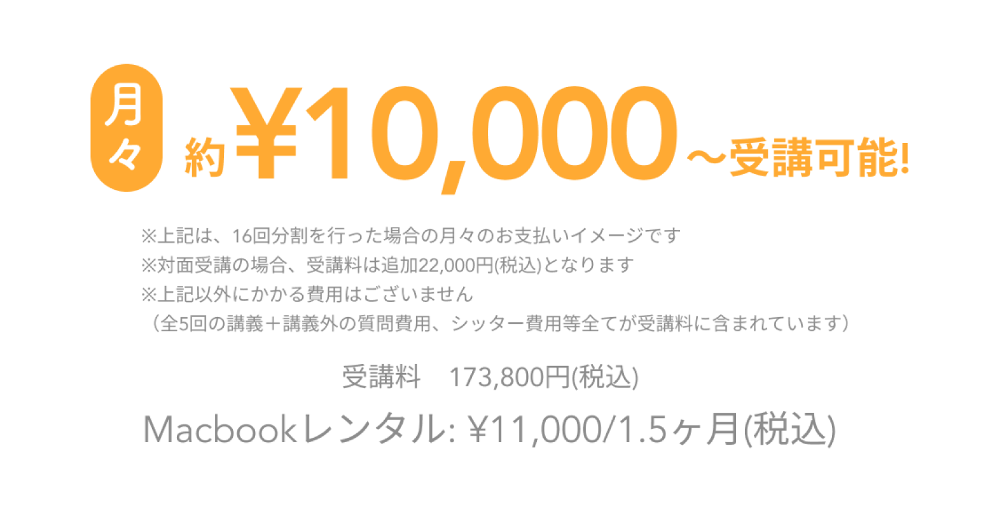
※上記は24分割での月々の支払額イメージです。
※上記以外にかかるスクール費用はございません。
オンラインスクールにおけるFammの立ち位置
他社様は「就職を前提としたコースや料金体系」になっているところがほとんどです。
Fammスクールは「ママが在宅で月に10万以上を稼ぐことに特化」して本当に必要な内容を選び抜くことで低価格を実現しています。
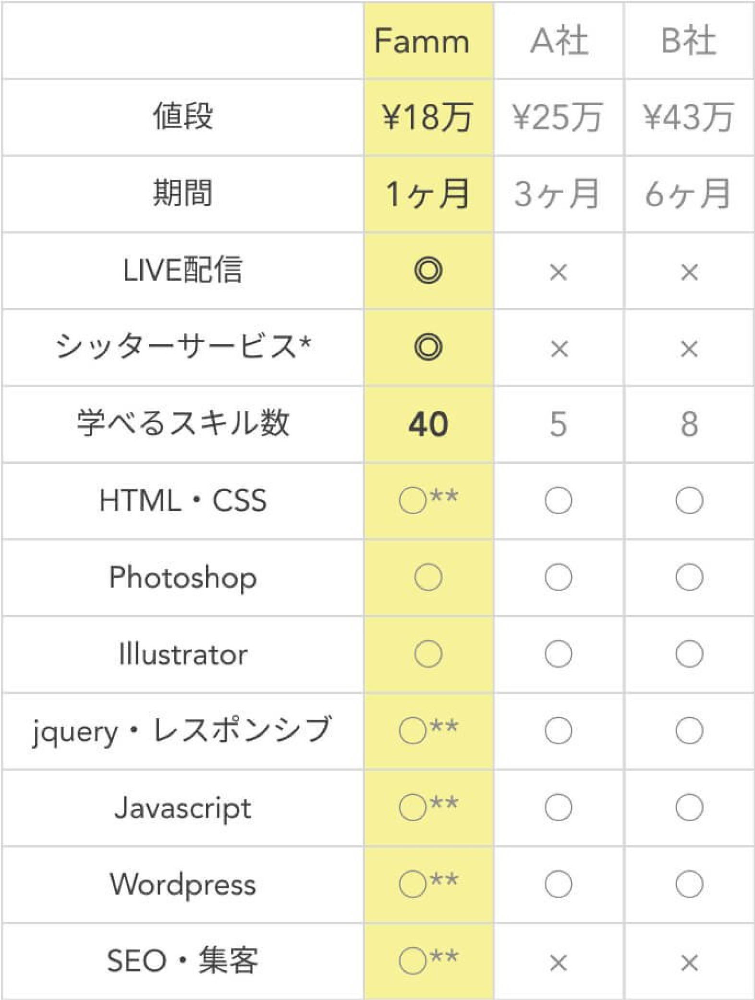
*LIVE配信講座の場合はおうちにシッターが伺い、対面講座の場合はキッズスペースでお預かりします。
**卒業後、完全無料のオンラインコースで学ぶことができます。
無料説明会開催日程
ここではお伝えしきれないサービス内容の詳細説明や、気になる点・ご質問にお答えする電話説明会を実施いたします。現在のご状況や今後の在宅ワーク・働き方の希望を踏まえたカウンセリングも合わせて実施いたします。将来に関するご不安・モヤモヤに対する相談やアドバイスが欲しい！という目的でもぜひお気軽にご参加くださいませ。
※お子様とご一緒でも全く問題ございません。途中で電話を止めたりなどもできますので、お子様を最優先のうえ電話説明会ができますので、ご安心ください。
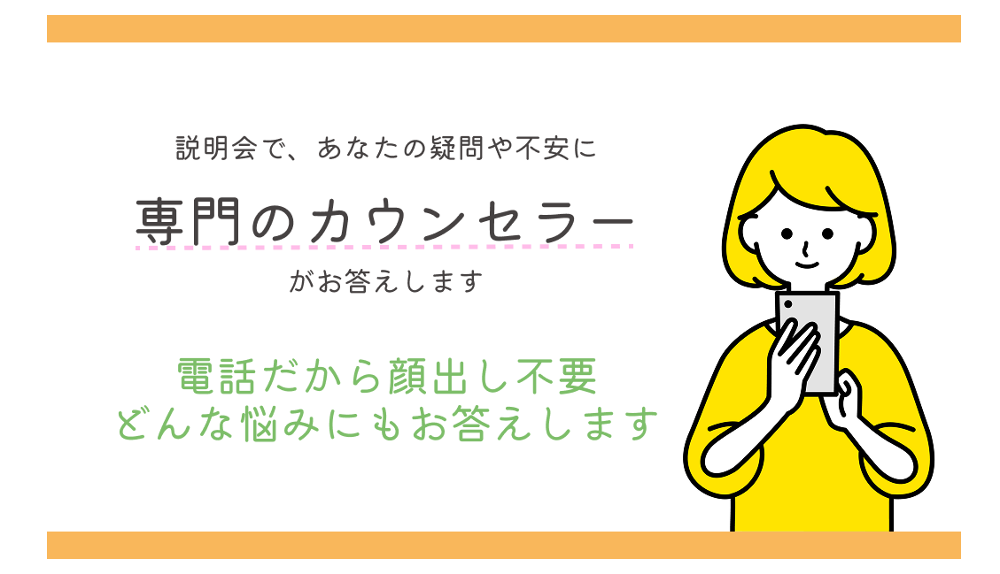
02/10(火)
- 09:30～10:15(※残1)
- 10:30～11:15(※残1)
- 11:30～12:15(※残1)
- 12:30～13:15(※残1)
- 13:30～14:15(※残1)
- 14:30～15:15(※残1)
- 15:30～16:15(※残1)
- 16:30～17:15(※満席)
- 17:30～18:15(※残1)
- 18:30～19:15(※満席)
- 19:30～20:15(※残1)
- 20:30～21:15(※満席)
02/11(水)
- 09:30～10:15(※残1)
- 10:30～11:15(※残1)
- 11:30～12:15(※残1)
- 12:30～13:15(※残1)
- 13:30～14:15(※残1)
- 14:30～15:15(※残1)
- 15:30～16:15(※残1)
- 16:30～17:15(※残1)
- 17:30～18:15(※残1)
- 18:30～19:15(※残1)
- 19:30～20:15(※残1)
- 20:30～21:15(※残1)
02/12(木)
- 09:30～10:15(※残1)
- 10:30～11:15(※残1)
- 11:30～12:15(※残1)
- 12:30～13:15(※残1)
- 13:30～14:15(※残1)
- 14:30～15:15(※残1)
- 15:30～16:15(※残1)
- 16:30～17:15(※残1)
- 17:30～18:15(※残1)
- 18:30～19:15(※残1)
- 19:30～20:15(※残1)
- 20:30～21:15(※残1)
02/13(金)
- 09:30～10:15(※残1)
- 10:30～11:15(※残1)
- 11:30～12:15(※残1)
- 12:30～13:15(※残1)
- 13:30～14:15(※残1)
- 14:30～15:15(※残1)
- 15:30～16:15(※残1)
- 16:30～17:15(※残1)
- 17:30～18:15(※残1)
- 18:30～19:15(※残1)
- 19:30～20:15(※満席)
- 20:30～21:15(※満席)
02/14(土)
- 09:30～10:15(※残1)
- 10:30～11:15(※残1)
- 11:30～12:15(※残1)
- 12:30～13:15(※残1)
- 13:30～14:15(※残1)
- 14:30～15:15(※残1)
- 15:30～16:15(※残1)
- 16:30～17:15(※満席)
- 17:30～18:15(※残1)
- 18:30～19:15(※残1)
- 19:30～20:15(※残1)
- 20:30～21:15(※満席)
02/15(日)
- 09:30～10:15(※残1)
- 10:30～11:15(※残1)
- 11:30～12:15(※残1)
- 12:30～13:15(※残1)
- 13:30～14:15(※残1)
- 14:30～15:15(※残1)
- 15:30～16:15(※残1)
- 16:30～17:15(※残1)
- 17:30～18:15(※残1)
- 18:30～19:15(※残1)
- 19:30～20:15(※残1)
- 20:30～21:15(※満席)
02/16(月)
- 09:30～10:15(※残1)
- 10:30～11:15(※残1)
- 11:30～12:15(※残1)
- 12:30～13:15(※残1)
- 13:30～14:15(※残1)
- 14:30～15:15(※残1)
- 15:30～16:15(※残1)
- 16:30～17:15(※残1)
- 17:30～18:15(※残1)
- 18:30～19:15(※残1)
- 19:30～20:15(※満席)
- 20:30～21:15(※満席)
※カウンセリング付電話無料説明会のご予約や、講座への本申込についても、原則先着順となります。
※ぜひ、お早目のお申込をお願いできますと幸いです。
よくある質問
Q: 講座の全5回とはどのような頻度ですか
A: 基本的には1週間に1回、1回の講座あたり3時間程度を想定しています。（一部、週2回の日程がございます）各講座ごとでどのようなことを学んでいただくかの詳細などは、説明会でもご説明させていだきます。
Q: 子供と一緒に参加しても大丈夫ですか
A: Timers社は子育て家族向けのアプリを運営している会社ですので、お気軽にお子様とご一緒に参加ください。また無料でご自宅にシッターサービスを提供しますので、ママさんにも安心して授業を受けていただくことが可能です。※地域や日程が合わない場合は、必要を負担しますので自己手配をお願い致します。対面講座の場合にはキッズスペースもシッターも常駐しております、講義の教室からリアルタイムで、お子様の様子を見ることもできます。
Q: 説明会は無料ですか
A: 無料ですので、お気軽にご参加ください。説明を受け理解を深めて頂いた上で、その場でお申し込み頂くか、ご検討のうえ後日申し込みかもお選び頂けます。
Q: 初心者・未経験者でも大丈夫ですか
A: 大丈夫です。本講座は、Webデザイン初心者・未経験者の方向けを前提にした講座コースなので、安心してご参加ください。
Q: 未経験者でも講座受講後すぐに60万円稼げますか
A: 説明会でも詳細をご説明させていただいていますが、Fammママ専用スクールの1ヶ月のWebデザインコースの講座受講ですぐに月収60万円を超えることはありません。講座受講後、在宅でのお仕事を受け始め、継続的に実績作り、スキルアップをされ、Webデザイナーとしての経験を重ねていく上で目指せる実現可能なケースだとご理解ください。

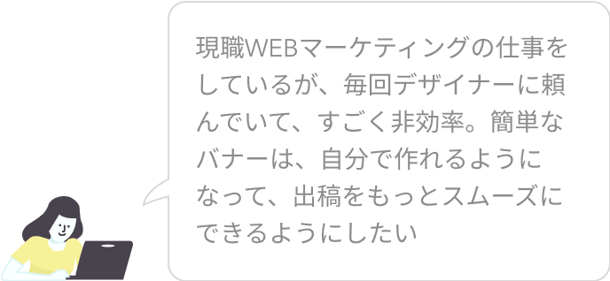
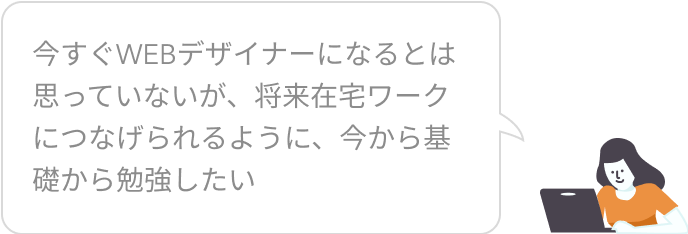
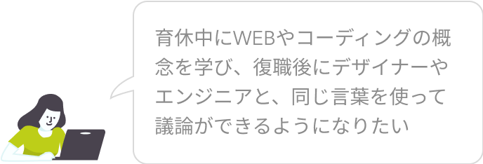